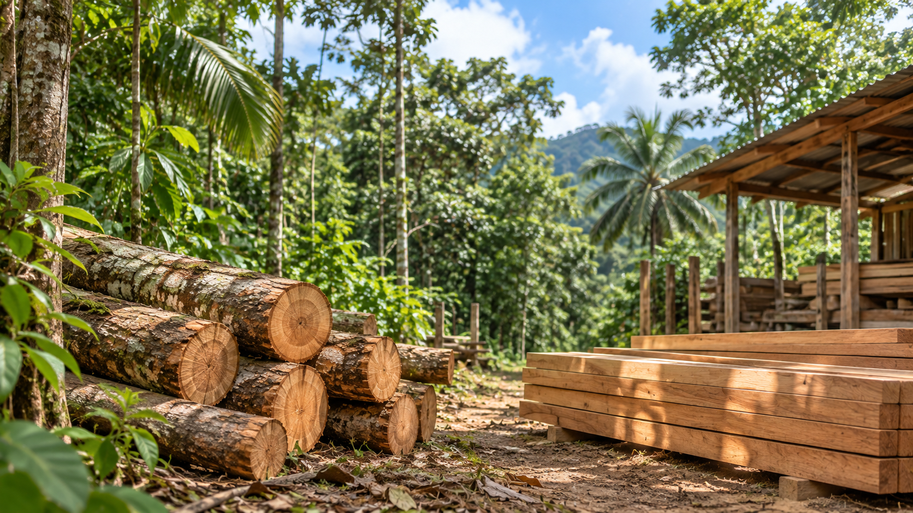
Introducción a la compra y consumo responsable de productos forestales maderables
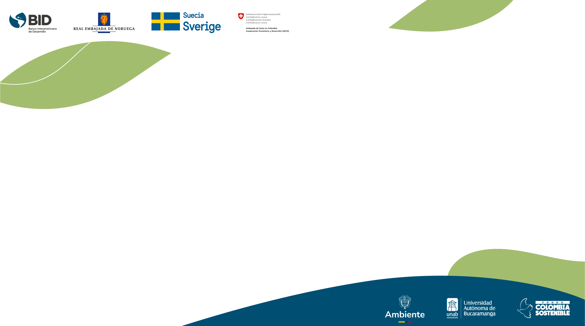
Video inicial
Tabla de contenido
Módulo 1
Acercamiento al sector forestal colombiano
Estructura de la cadena forestal maderable
Usos y beneficios de la madera
Compra y consumo responsable
Rol del comprador/
consumidor responsable
01
02
03
04
05
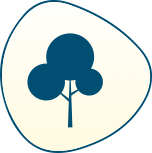
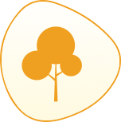
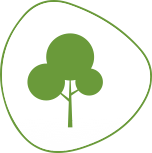
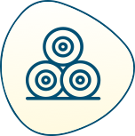
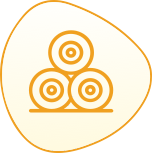
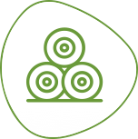
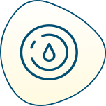
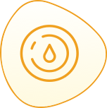
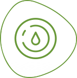
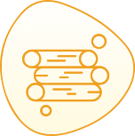
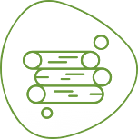
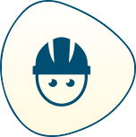
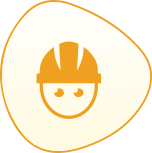
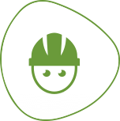
Bosque natural
Módulo 1 · Sector forestal colombiano
Colombia es un país tropical, ubicado en el extremo noroccidental de América del Sur. Cuenta con una superficie de 1.141.748 km2, de los cuales el 51,8 % de territorio continental e insular se encuentra cubierto por bosque, es decir 59.078.025 hectáreas a 2024, siendo catalogado como uno de los doce países con mayor cobertura boscosa a nivel global, conservando cerca del 1,5 % del bosque del planeta reportada por FAO (2022). La mayor proporción de bosque natural se concentra en la región de la Amazonía, cerca de 38.8 millones de hectáreas (65,6 % nacional).
Ver mapa
La administración del bosque natural se realiza a través del Sistema Nacional Ambiental (SINA) y está conformado entre otros por el Ministerio de Ambiente y Desarrollo Sostenible, las 34 Corporaciones Autónomas Regionales y de Desarrollo Sostenible, las cuatro unidades ambientales urbanas y la Unidad Administrativa Especial del Sistema de Parques Nacionales Naturales. Además, los institutos de investigación como el Invemar, Humboldt, Sinchi, IDEAM, y el IIAP.
Ver video
Los resultados de monitoreo de la deforestación para el año 2024 señalan que en Colombia hubo 113.608 hectáreas; lo que se constituye como una tendencia de aumento de deforestación en el país, si es comparada con el reporte del año 2023. Se distribuye principalmente en las regiones de la Amazonía 68 % (77.124 ha) y los Andes 13 % (14.910 ha).
(IDEAM y Ambiente, 2025).
Las principales causas directas de la deforestación durante 2024, reportadas en el país, fueron la praderización para el acaparamiento de tierras, la ganadería extensiva y el desarrollo de infraestructura de transporte.
Otras causas son los cultivos de uso ilícito, la extracción de madera (tala ilegal), la extracción ilícita de minerales, la expansión agrícola (principalmente de tipo industrial) y factores biofísicos como por ejemplo la remoción en masa.
Ver imagen
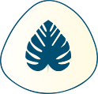
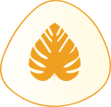
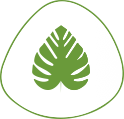
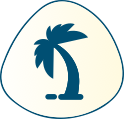
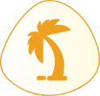
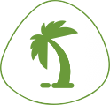
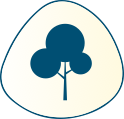
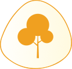
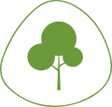
Las plantaciones forestales con fines comerciales suman un total de 549.611 hectáreas a diciembre de 2024 (Ministerio de Ambiente y Desarrollo Sostenible, 2025), y cuentan con un potencial de crecimiento de 14.1 millones de hectáreas gracias a su aptitud alta y media para el desarrollo de plantaciones forestales (UPRAColombia, 2022).
Cultivos forestales con fines comerciales
Módulo 1 · Sector forestal colombiano
Ver más
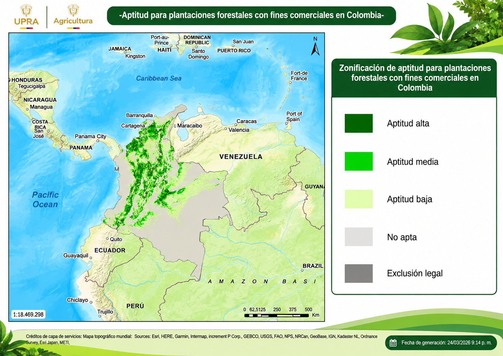
Los departamentos de Vichada (21,51%), Antioquia (19,10%) y Meta (12,8%) representan en conjunto más del 50% del total sembrado.
La región Andina tiene la mayor proporción con el 38%, seguida de las regiones de la Orinoquía (36%) y el Caribe (15%). Las cinco especies forestales con objetivo comercial más sembradas son Acacia mangium, Pinus patula, Pinus caribaea, Eucalyptus pellita y Eucalyptus grandis.
Cultivos forestales con fines comerciales
Módulo 1 · Sector forestal colombiano
Fuente: UPRAColombia. (2022). Publicación Zonificación para plantaciones forestales con fines comerciales en Colombia [Video]. YouTube. https://www.youtube.com/watch?v=6lh7_v_vlx0
El Ministerio de Agricultura y Desarrollo Rural es la entidad competente para formular la política de cultivos forestales con fines comerciales y ha delegado funciones en el Instituto Colombiano Agropecuario (ICA), el cual debe hacer su registro (Decreto 2398 de 2019).
Cultivos forestales con fines comerciales
Módulo 1 · Sector forestal colombiano
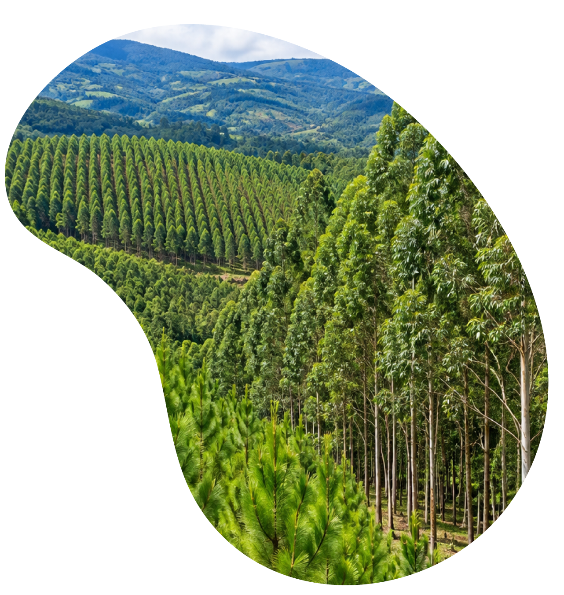
Cifras del sector forestal colombiano
Módulo 1
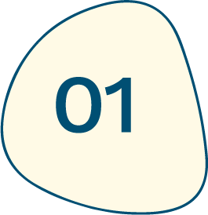
Aporte de 3.5 billones de pesos al valor agregado (2024 pr).
El subsector de Silvicultura y Extracción de Madera participa en un 2 % sobre el valor agregado del sector de Agricultura, ganadería, caza, silvicultura y pesca.
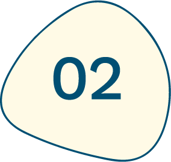
La balanza comercial es deficitaria (2024).
La balanza comercial del sector madera y muebles, Bambú y Corcho y sus manufacturas, presenta una disminución de 0,3 % en exportaciones, y un crecimiento del 21 % en importaciones para 2024, en comparación con 2023, lo que se considera como una balanza negativa.
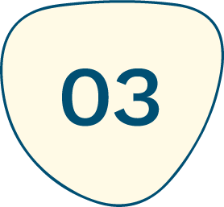
Los principales destinos de exportación son Estados Unidos (18,7 %), Panamá (16,3 %) y China (12,3 %), seguidos por México, India y otros países de América Latina.
Las exportaciones de madera en bruto, muebles y sus derivados (capítulos 44 y 94) alcanzaron un total de 114,1 millones de dólares FOB (2024).
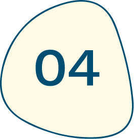
En 2024 se importó un total de USD 314,2 millones CIF en productos correspondientes a los capítulos 44 y 94, lo que representa 353.282 toneladas netas.
Los principales países de origen son Ecuador (35 %), China (17 %), Brasil (16 %) y Chile (11 %).
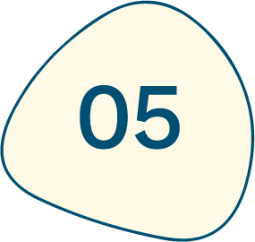
En 2023, por cada mil habitantes se consumieron 182,70 toneladas de insumos naturales del bosque.
134,08 toneladas correspondieron a recursos madereros naturales y 48,62 toneladas a residuos de recursos naturales.
Haz clic en cada tarjeta para conocer su información
Fuentes: DANE (2023); Ministerio de Ambiente y Desarrollo Sostenible (2025).
Cifras del sector forestal colombiano Movilización
Módulo 1
En el año 2024 fueron cuatro los departamentos que concentraron el 62,25 % del volumen total de madera movilizada en el país: Antioquia (30,09 %), Valle del Cauca (15,76 %), Cauca (12,48 %) y Boyacá (5,69 %). En cuanto a la movilización de madera reportada por el Ministerio de Ambiente, los principales departamentos fueron: Nariño (141.575 m³), Antioquia (118.056 m³) y Boyacá (62.245 m³).
Fuente: Ministerio de Ambiente y Desarrollo Sostenible (2025).
| Fuente | 2021 | 2022 | 2023 | 2024 |
|---|---|---|---|---|
| Agricultura | 2.298.938 | 2.508.263 | 2.333.500 | 2.301.012 |
| Ambiente | 621.048 | 540.288 | 556.255 | 537.957 |
| Total | 2.919.986 | 3.048.551 | 2.889.755 | 2.838.969 |
¡Relaciona cada concepto con su definición!
Pon a prueba tus conocimientos
Módulo 1
Algunas entidades del SINA son:
Invemar, IIAP, Ministerio de Ambiente, autoridades ambientales
Los cultivos forestales comerciales son competencia de:
Ministerio de Agricultura y Desarrollo Rural
El potencial forestal de Colombia está constituido por:
59MM ha de bosque natural, y 14MM ha en aptitud forestal
Retroalimentación aciertos:
Continuar
1: La ley 99 del 1993 crea el Sistema Nacional Ambiental (SINA), para la administración del Bosque Natural en Colombia.
2. El Ministerio de Agricultura es la entidad competente para formular la política de cultivos forestales con fines comerciales, y ha delegado funciones en el Instituto Colombiano Agropecuario (ICA).
3. Colombia es un país de alto potencial para el desarrollo forestal con aproximadamente el 50% de su territorio cubierto en bosques naturales; con 14MM de hectáreas con vocación –o aptitud catalogada alta y media– para plantaciones forestales comerciales.
Algunos conceptos básicos
Módulo 1
Haz clic en cada botón para conocer su información
Fuente: Ministerio de Ambiente y Desarrollo Sostenible (2019).
Producto forestal
Producto forestal maderable
Madera legal
Gobernanza Forestal
Producto forestal
Producto forestal maderable
Madera legal
Gobernanza Forestal
Es el bien obtenido de la transformación de especímenes de la flora, o derivado de los productos forestales primarios maderables y no maderables provenientes del aprovechamiento de bosque natural y de plantaciones forestales, cultivos forestales o sistemas agroforestales con fines comerciales, arreglos silvícolas de carácter protector y protector-productor, árboles aislados y arbolado urbano.
Producto forestal
Producto forestal maderable
Madera legal
Gobernanza Forestal
Es la madera que se obtiene del aprovechamiento de especies forestales; así como los productos y derivados que se obtengan de la transformación de ésta. Se diferencian entre rollizos y aserrados.
Producto forestal
Producto forestal maderable
Madera legal
Gobernanza Forestal
Es aquella extraída, transportada, transformada y comercializada cumpliendo con todas las normas nacionales de gestión forestal, ambiental y de seguridad social. Proviene de fuentes autorizadas, garantizando la sostenibilidad de los bosques, la legalidad de los permisos y el pago de impuestos, lo que combate la deforestación y la tala ilegal.
Producto forestal
Producto forestal maderable
Madera legal
Gobernanza Forestal
Es el proceso dinámico de articulación y participación de múltiples actores con el propósito de promover la gestión y desarrollo sostenible de los bosques y otros ecosistemas naturales mediante la aplicación de diferentes instrumentos y mecanismos de política, normativos, técnicos, sociales y económicos.
Aprovechamiento
y transformación
Cultivos forestales
con objetivo comercial
Bosques naturales
Planificación, manejo forestal
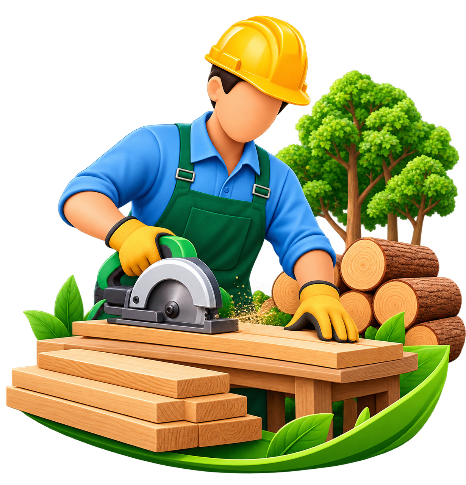
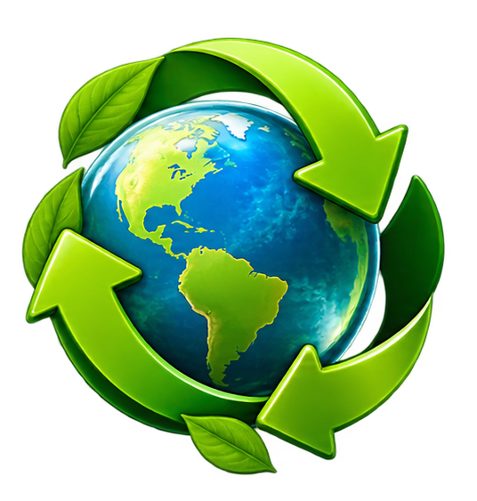
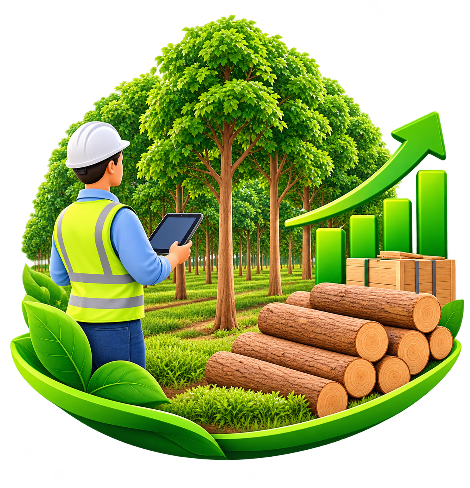
Primer transporte
Transformación primaria
Primera comercialización
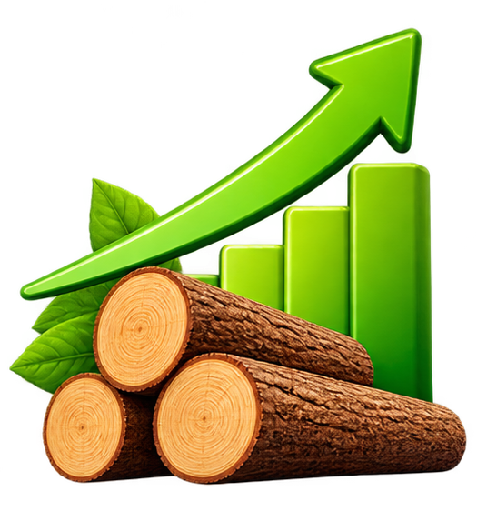
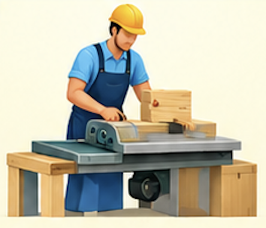
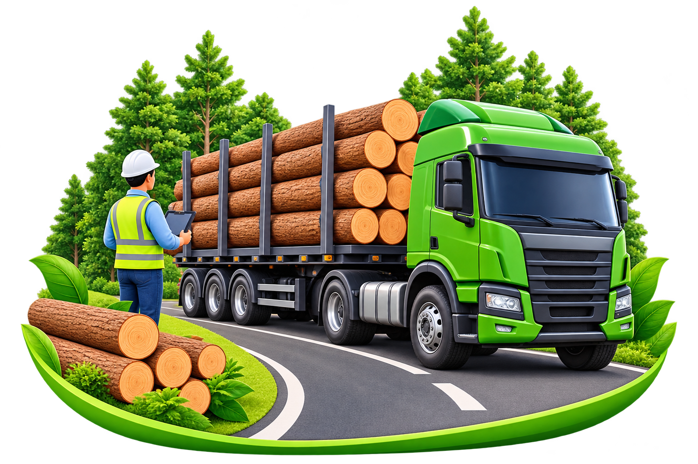
Transformación a producto terminado
Segunda movilización
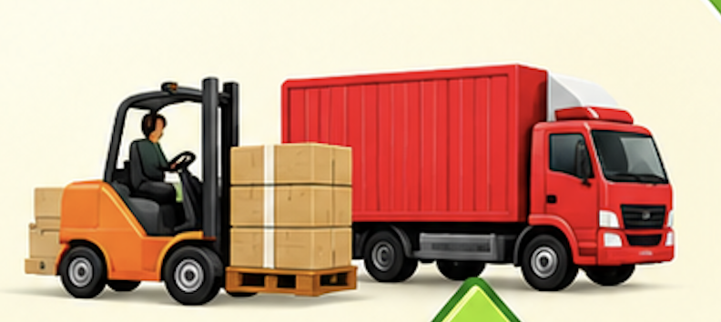
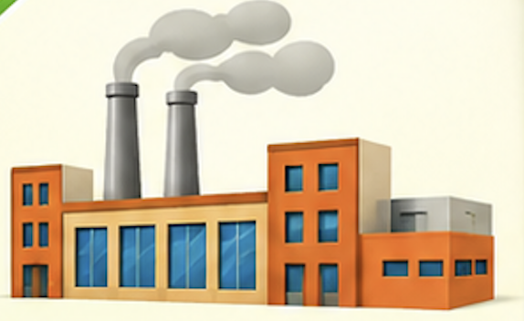
Comercialización nacional e internacional
Consumidor final
Cadena forestal
Módulo 1
Haz clic en cada botón para conocer su información
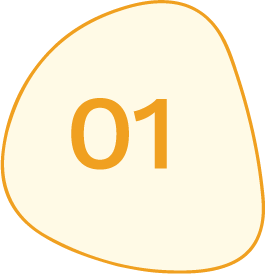
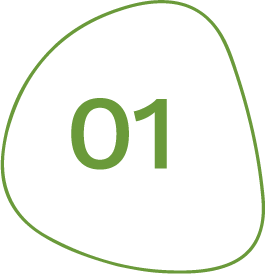
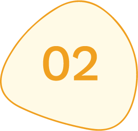
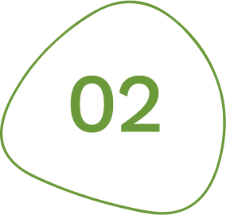
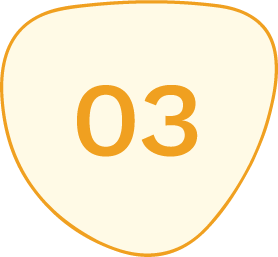
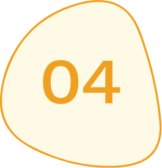
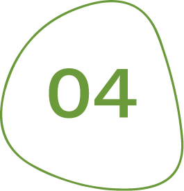
Fuente: De Camino (2023).
Cadena forestal: de acuerdo con la Ley 811 de 2003 (artículo 1): “La cadena es el conjunto de actividades que se articulan técnica y económicamente desde el inicio de la producción y elaboración de un producto agropecuario hasta su comercialización final. Está conformada por todos los agentes que participan en la producción, transformación, comercialización y distribución de un producto agropecuario”.
En el eslabón primario se encuentran los productores (campesinos, comunidades indígenas, afrodescendientes o asociaciones, propietarios privados y empresas forestales) que realizan manejo forestal sostenible en el bosque natural y en plantaciones forestales protectoras productoras; y los reforestadores, empresarios (grandes, medianos y pequeños) que se dedican a los cultivos forestales comerciales como objetivo principal o en arreglos agro y silvopastoriles. Incluye el aprovechamiento forestal y puede realizarse la transformación primaria directa si así se decide en la planificación.
En el eslabón secundario se encuentra el primer transporte, la transformación primaria (si no se realizó en campo), y la posible comercialización intermedia con el objetivo de agregar valor o distribuir en centros de acopio (depósitos).
También es posible que la madera sea llevada directamente a la industria para procesos de producción de tableros, pulpa, papeles y cartones, producción de producto terminado (madera de plantaciones forestales), o producción de biomasa y carbón vegetal como forma de maximizar el uso de la materia prima a través de subproductos.
Finalmente, el último eslabón corresponde a la comercialización local o con destino internacional, ya sea de productos terminados, productos con transformación intermedia o productos con transformación primaria para incorporar a otras cadenas de suministro. El consumidor final se considera aquel que adquiere el producto terminado para su uso y quien no agrega valor con objetivo comercial.
Aunque el consumidor final se encuentra en el último eslabón de la cadena, su decisión de compra responsable impacta en todos los eslabones y sus actores, ya que la demanda de un producto legal y sostenible requiere trazabilidad demostrable en toda la cadena de suministro.
Pon a prueba tus conocimientos
Módulo 1
¿Qué entidad se encarga de administrar los recursos forestales naturales en Colombia?
¡Selecciona la respuesta correcta!
a.
Se realiza a través del Sistema Nacional Ambiental (SINA).
b.
El Ministerio de Ambiente y Desarrollo Sostenible.
c.
El Ministerio de Agricultura y Desarrollo Rural.
Retroalimentación:
Muy bien, has acertado.
Continuar
Retroalimentación:
Es incorrecto, puedes intentarlo de nuevo.
Reintentar
Pon a prueba tus conocimientos
Módulo 1
¿En qué entidad ha delegado el Ministerio de Agricultura y Desarrollo Rural la formulación de la política de cultivos forestales con fines comerciales?
¡Selecciona la respuesta correcta!
a.
Institutos de investigación como IIAP, Sinchi e Invemar.
b.
Instituto Colombiano Agropecuario (ICA).
c.
Ministerio de Ambiente y Desarrollo Sostenible.
Retroalimentación:
Muy bien, has acertado.
Continuar
Retroalimentación:
Es incorrecto, puedes intentarlo de nuevo.
Reintentar
Pon a prueba tus conocimientos
Módulo 1
¿En qué eslabón de la cadena forestal se encuentra el consumidor/comprador?
¡Selecciona la respuesta correcta!
a.
Es el actor final de la cadena forestal y se encuentra en el último eslabón.
b.
Es el actor inicial de la cadena y se encuentra en el primer eslabón.
c.
Es un actor que se encuentra a lo largo de toda la cadena forestal y que genera, con su decisión, un efecto dominó con impacto en todos los actores.
Retroalimentación:
Muy bien, has acertado.
Continuar
Retroalimentación:
Es incorrecto, puedes intentarlo de nuevo.
Reintentar
¿Te has preguntado en qué se usa la madera?
Módulo 1
Fuente: Elija Madera Legal Compre Responsable - PIML. (2021). Madera Legal para el sector Construcción en Colombia [Video]. YouTube. https://www.youtube.com/watch?v=L_75HanqCBI
Presentación de la madera
Módulo 1
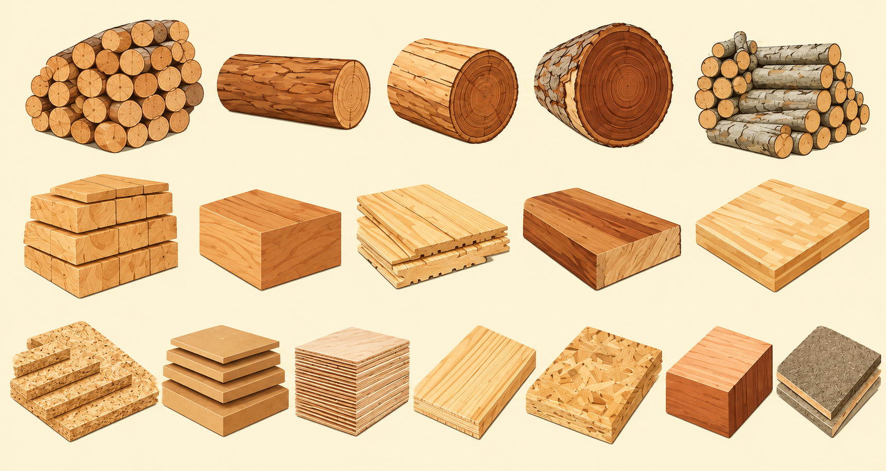
Poste
Poste
Vara corredor
Vara corredor
Vara limatón
Vara limatón
Pilote
Pilote
Troza
Troza
MADERA ROLLIZA
Bloque
Bloque
Viga
Viga
Tabla
Tabla
Tablón
Tablón
Tablero finger joint
Tablero finger joint
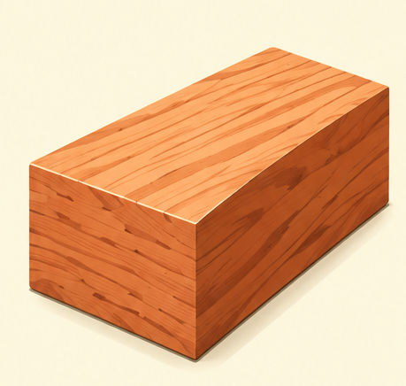
Tableros de microlaminado
Tableros de microlaminado
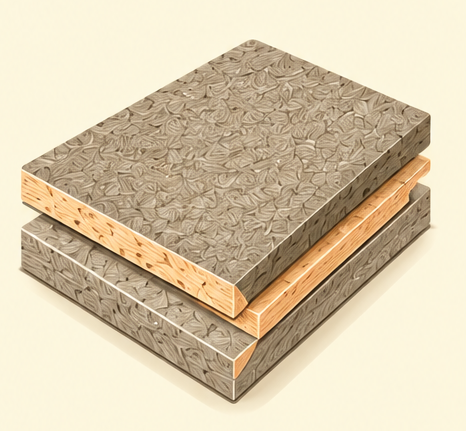
Tablero de madera-cemento
Tablero de madera-cemento
MADERA ASERRADA
DERIVADOS DE MADERA
Tablero de partículas aglomeradas
Tablero de partículas aglomeradas
Tablero de fibra o MDF
Tablero de fibra o MDF
Tablero contrachapado
Tablero contrachapado
Tablero tricapa o chapeado
Tablero tricapa o chapeado
Tablero de virutas orientadas (OSB)
Tablero de virutas orientadas (OSB)
Tableros laminados de alta presión
Tableros laminados de alta presión
Ver más
Poste
Soporte vertical principal de sección variable con superficies paralelas entre sí y al eje longitudinal, de relación variable entre el diámetro y longitud según el uso al que se destine. Son considerados como preservados cuando se los trata con creosota, arseniato de cobre cromatado (CCA), u otro similar. Así, mejora la durabilidad del producto en ambientes exteriores.
Fuentes de las definiciones: Gutiérrez et al. (2020); ICONTEC (1997).
Vara corredor
Es la viga horizontal que se coloca sobre la parte superior de los muros o columnas para servir de apoyo a los pares o viguetas del techo. Sus medidas están entre 6,5 y 7.5 cm de diámetro.
Fuentes de las definiciones: Gutiérrez et al. (2020); ICONTEC (1997).
Vara limatón
Pieza estructural que se coloca en la intersección del techo que forma un ángulo hacia afuera. Sus medidas están entre 9 y 12.5 cm de diámetro.
Fuentes de las definiciones: Gutiérrez et al. (2020); ICONTEC (1997).
Pilote
Pieza de madera utilizada para soportar cargas, sus medidas dependen de la carga (peso) que va a soportar. Puede estar entre 13.5 y 15 cm de diámetro.
Fuentes de las definiciones: Gutiérrez et al. (2020); ICONTEC (1997).
Troza
Cualquier sección sin transformación secundaria de un fuste o de las ramas de un árbol aprovechado.
Fuentes de las definiciones: Gutiérrez et al. (2020); ICONTEC (1997).
Bloque
Sección de madera rústica en su primera transformación. Presenta diferentes espesores, anchos y largos, dependiendo del objetivo del bloque y el árbol aprovechado. Generalmente presenta textura rústica y marcas de la acción de la motosierra.
Fuentes de las definiciones: Gutiérrez et al. (2020); ICONTEC (1997).
Viga
Pieza de madera utilizada para soportar cargas, sus medidas dependerán de la carga (peso) que va a soportar. Puede estar entre 6.5-7.5 cm de ancho por 18-20 cm de largo.
Fuentes de las definiciones: Gutiérrez et al. (2020); ICONTEC (1997).
Tabla
Pieza de madera plana, alargada y rectangular, de caras paralelas, más larga que ancha y más ancha que alta. Los espesores usuales oscilan entre ½ pulgada a 1,5 pulgadas.
Fuentes de las definiciones: Gutiérrez et al. (2020); ICONTEC (1997).
Tablón
Tabla de espesor mayor a 1,5 pulgadas.
Fuentes de las definiciones: Gutiérrez et al. (2020); ICONTEC (1997).
Tablero finger joint
Piezas de madera unidas a través del proceso de empalme por medio de cortes en forma de dientes en ‘V’, preparados con precisión en los extremos de dos piezas de madera para ensamblarlos con ayuda de un adhesivo. Así se obtienen piezas de mayor longitud, reduciendo la tensión y mejorando la estabilidad dimensional del producto.
Fuentes de las definiciones: Gutiérrez et al. (2020); ICONTEC (1997).
Tablero de microlaminado
Definición pendiente: no viene en ppt-contenidos.
Fuentes de las definiciones: Gutiérrez et al. (2020); ICONTEC (1997).
Tablero de madera-cemento
Tableros de partículas o astillas cuyo aglutinante es el cemento. El uso más frecuente es para divisiones, cielos rasos, recubrimientos, acabados y cubiertas.
Fuentes de las definiciones: Gutiérrez et al. (2020); ICONTEC (1997).
Tablero de partículas aglomeradas
Formados por partículas de madera, aglomeradas mediante presión y calor en presencia de un adhesivo termoendurecido.
Fuentes de las definiciones: Gutiérrez et al. (2020); ICONTEC (1997).
Tablero de fibra o MDF
Tablero fabricado a partir de plaquitas, astillas o partículas de madera desfibradas. En el caso del proceso en seco, se añaden resinas termo endurecibles a las fibras de madera secas, mientras que en el húmedo se agregan las mismas resinas a las fibras de madera húmedas.
Fuentes de las definiciones: Gutiérrez et al. (2020); ICONTEC (1997).
Tablero contrachapado
Tablero formado por láminas de madera encoladas, de modo que las fibras de una lámina con la otra, y/o dos o más láminas consecutivas, formen un ángulo, generalmente de 90°. Suele ser fabricado con especies de densidad baja.
Fuentes de las definiciones: Gutiérrez et al. (2020); ICONTEC (1997).
Tablero tricapa o chapeado
Tablero de madera compuesto por un alma, que puede estar constituida por madera aserrada (listones, tablillas, piezas finger joint) o por tableros de fibras o partículas. Está recubierta por láminas de madera contrachapada o decorativa, en la cara y contracara.
Fuentes de las definiciones: Gutiérrez et al. (2020); ICONTEC (1997).
Tablero de virutas orientadas (OSB)
Tablero constituido por astillas o partículas de madera, mezcladas con ayuda de aglutinantes (generalmente impermeables). Normalmente orientadas longitudinalmente en superficie y perpendicularmente o de forma aleatoria en el interior del tablero, a fin de mejorar sus características mecánicas.
Fuentes de las definiciones: Gutiérrez et al. (2020); ICONTEC (1997).
Tablero laminado de alta presión
Definición pendiente: no viene en ppt-contenidos.
Fuentes de las definiciones: Gutiérrez et al. (2020); ICONTEC (1997).
Madera rolliza
Madera en su estado natural, seccionada y/o desbastada para eliminar ramas u otras protuberancias que dificulten su transporte. Es el insumo principal para la industria del aserrío y bobinado de madera.
Fuentes de las definiciones: Gutiérrez et al. (2020); ICONTEC (1997).
Madera aserrada
Pieza de madera en forma de paralelepípedo regular, obtenida por medio de sierras manuales, mecánicas (sierra de cinta, de disco o alternativa) o por un proceso de desenrollado.
Fuentes de las definiciones: Gutiérrez et al. (2020); ICONTEC (1997).
La madera maciza presenta algunas limitantes por ser un material de origen natural y que depende del tipo de árbol de origen, comportamiento y características físico-mecánicas, limitantes que no tienen los materiales normalizados como el acero u hormigón.
Esta situación se ve superada por los derivados de madera, los cuales constituyen una respuesta a las exigencias técnicas de diferentes sectores industriales; con estos elementos se eliminan o reducen los diversos problemas y limitaciones propios de la madera maciza. Con los productos derivados de madera es posible conseguir longitudes normalizadas; igualmente, las deformaciones de las piezas se reducen al mínimo, así como los defectos durante el secado.
Tendencias de uso de la madera aserrada
Módulo 1
Haz clic en cada botón para conocer su información
Otros usos están asociados a artesanías y mobiliario en madera maciza.
De uso temporal
Para construcción
De uso estético
Para elementos interiores
De uso temporal
Para construcción
De uso estético
Para elementos interiores
Generalmente se descartan luego de su uso como formaletas, andamios, estacas, cerramientos y vigas temporales.
De alta resistencia mecánica y se utilizan con objetivo estructural como vigas y columnas.
De uso temporal
Para construcción
De uso estético
Para elementos interiores
De buen veteado y color, usada para acabados y elementos a la vista, no es estructural.
De uso temporal
Para construcción
De uso estético
Para elementos interiores
Admite baja calidad en la apariencia y defectos pues está sujeta a enchapado, pintura o barnizado.
De uso temporal
Para construcción
De uso estético
Para elementos interiores
Da clic sobre cada uno de los íconos
Ventajas
del uso de madera
Módulo 1
Ventajas del uso de madera
Por sus excelentes características porosas, puede ser un aislante térmico.
Por sus características, es de fácil reuso o reciclaje.
Material natural de origen renovable y con cadenas de suministro controladas para garantizar sostenibilidad.
Ser un buen aislante acústico por sus características de densidad y estructura porosa.
Material liviano, lo cual reduce los costos de transporte y disposición final.
Reservorio de carbono secuestrado de la atmósfera de almacenamiento de largo plazo.
Es adaptable al diseño estético y belleza final cuando se usa en construcción.
Es la adquisición de productos forestales maderables para uso doméstico que pueden realizar las personas o usuarios finales.
¿Qué es un consumo responsable de productos forestales maderables ?
Módulo 1
Los consumidores, en su mayoría, adquieren productos terminados o con algún grado de transformación. Por tanto, requieren acudir a establecimientos comerciales legalmente constituidos, respaldar su compra a través de una factura y estudiar cuidadosamente si el producto adquirido cuenta con una certificación creíble y de confianza, que garantice la legalidad, sostenibilidad y los procesos apropiados de producción.
Fuente: Ministerio de Ambiente y Desarrollo Sostenible (2023).
WWF Colombia. (2018). ¡Compra productos con el Sello FSC! [Video]. YouTube. https://www.youtube.com/watch?v=bpw2lq48IjE
Algunos conceptos básicos
Módulo 1
Consumo sostenible
Consiste en adoptar medidas que promuevan la transformación de los patrones de producción hacia unos más sostenibles, que incrementen el aprovechamiento adecuado de recursos naturales y promuevan estilos de vida sostenibles, buscando minimizar los impactos negativos que se puedan generar sobre el ambiente.
Objetivo 12 de los ODS
Este numeral de los Objetivos de Desarrollo Sostenible pretende garantizar modalidades de consumo y producción sostenibles, algo fundamental para sostener los medios de subsistencia de las generaciones actuales y futuras.
Política nacional de producción y consumo sostenible
Impulsa el consumo responsable en el país, en cumplimiento con el objetivo 12 de los ODS.
Entre sus instrumentos se encuentran las fichas técnicas –con criterios de sostenibilidad ambiental para bienes y servicios– que se abordarán en el módulo 2.
Es una acción basada en una decisión sencilla y directa en la cual una entidad pública o privada adquiere un producto forestal maderable, asegurándose de que provenga de fuentes legales y sostenibles, usando para ello herramientas de validación propias o de terceros (como la certificación forestal voluntaria).
Módulo 1
¿Qué es una compra responsable de productos forestales maderables ?
De esta manera el comprador tiene una actitud responsable, demostrando ante sus partes interesadas y el sector forestal, su compromiso con los bosques, las comunidades y el medio ambiente.
Fuente: Ministerio de Ambiente y Desarrollo Sostenible (2023).
¿Cuáles son los beneficios de comprar responsablemente?
Módulo 1
Mejora de imagen reputacional
Generas confianza ante tus grupos de interés, como proveedores, clientes y entidades de control
y vigilancia.
Oportunidades de acceso a mercados diferenciados
Puedes ingresar a mercados específicos que comparten tus valores, solicitan trazabilidad de tu materia prima, productos certificados o fuentes legales y sostenibles.
Generación de redes de valor
Participación en redes de conocimiento, apoyo, transformación, reducción de costos, diferenciación de producto, preferencia de clientes y sostenibilidad en el mercado, generando un efecto dominó en la cadena productiva.
Sostenibilidad ambiental
Contribuyes al cuidado de los recursos naturales, el control de la deforestación y el mantenimiento de los ecosistemas y sus servicios.
Sostenibilidad social
Aportas a mercados justos que generan distribución de beneficios para comunidades campesinas, indígenas, afrodescendientes y empresas que apuestan por la producción basada en la sostenibilidad y la legalidad.
Haz clic en cada tarjeta para conocer su información
Un consumidor o comprador responsable no realiza únicamente la acción de compra, es además un agente de cambio y un motor de transformación del mercado.
Rol del consumidor/comprador responsable
Módulo 1
Su decisión al elegir un producto de fuentes legales y sostenibles “premia” o “castiga” a su proveedor, ya que reconoce la responsabilidad ambiental, social y económica sobre la obtención y fabricación del producto.
¿Qué promueves como consumidor/comprador responsable?
Módulo 1
Haz clic en cada botón para conocer su información
Fuente: Ministerio de Ambiente y Desarrollo Sostenible (s.f).
Promueves la cadena de valor
Promueve la economía circular
Promueve la conciencia a través del ejemplo
Promueve el consumo/compra local
Promueves la cadena de valor
Promueve la economía circular
Promueve la conciencia a través del ejemplo
Investiga el origen y trazabilidad del producto antes de adquirirlo. Si el proveedor no aplica prácticas legales y sostenibles, el consumidor/comprador responsable retira su apoyo económico, obligando a la marca a mejorar su imagen reputacional.
Promueve el consumo/compra local
Promueves la cadena de valor
Promueve la economía circular
Promueve la conciencia a través del ejemplo
Antes de adquirir un producto pregúntate si es necesario y en caso de que la respuesta sea sí, maximiza la vida útil del producto aplicando las 4R: reducir, reusar, recuperar, reciclar. Asegurándote de que el residuo se gestione adecuadamente. Esto disminuye la generación de residuos y la presión sobre los recursos naturales.
Promueve el consumo/compra local
Promueves la cadena de valor
Promueve la economía circular
Promueve la conciencia a través del ejemplo
Tu comportamiento como consumidor/comprador responsable inspira a tus redes sociales y laborales a implementar buenas prácticas, por tanto, comparte información verificable sobre productores y marcas legales y sostenibles, comparte tus experiencias de adquisición responsable y denuncia malas prácticas.
Promueve el consumo/compra local
Promueves la cadena de valor
Promueve la economía circular
Promueve la conciencia a través del ejemplo
Prefiere productores y productos locales, fortaleciendo la economía de tu región, apoyando el cierre de brechas y la competencia desleal.
Promueve el consumo/compra local
Para reflexionar
Módulo 1
Haz clic en cada botón para conocer su información
Como comprador, debes asegurarte de adquirir productos forestales maderables en establecimientos comerciales legalmente constituidos; cuya compra sea respaldada por una factura, sin evadir el pago del IVA, ya que impactan negativamente a todo el sector y puedes recibir sanciones.
Fuente: Fedemaderas (s.f).
Un consumidor responsable puede convertirse en el catalizador del cambio en la cadena productiva forestal, modificaciones ligeras en nuestros hábitos de consumo pueden generar un gran impacto en la sociedad. Es primordial implementar políticas de compra responsable que apoyen un cambio hacia prácticas sostenibles
Fuente: Naciones Unidas (2023).
Como comprador y consumidor debes:
1.Informarte del origen del producto que consumes y el impacto que genera su obtención.
2.Cuestionar tu necesidad de consumo y aplicar el pensamiento de reducir, reutilizar, reusar, reciclar.
3.Elegir la opción que genere menor impacto negativo, mayor confiabilidad y beneficio social, priorizando productos forestales cuyo origen legal esté garantizado. Para ello puedes utilizar herramientas como la certificación forestal voluntaria, el reconocimiento a la procedencia legal, y el catálogo de productos en elijamaderalegal.com sobre los que profundizaremos en el siguiente módulo.
Para resumir
Módulo 1
Entidades públicas o empresas privadas
Individuos/personas naturales consumidores finales
Selección de criterios ambientales, sociales y económicos para la adquisición
Programa de compra responsable
Verificación de etiquetas creíbles, establecimiento comercial legal
Comprador responsable
Consumidor responsable
Fuente: Ministerio de Ambiente y Desarrollo Sostenible (2023).
Conoce más
Módulo 1
¿Quién está detrás de la madera ilegal? https://www.youtube.com/watch?v=WyJoclNcVak
Colombia apuesta por el potencial forestal https://www.youtube.com/watch?v=3e3ulM4XiwU
Probosques - cadena de valor: https://www.youtube.com/watch?v=TRxpBmNpcM0
El ciclo de la cadena forestal https://visionamazonia.minambiente.gov.co/video/el-ciclo-de-la-cadena-forestal/
•Congreso de la República de Colombia. (2003). Ley 811 de 2003. Por medio de la cual se modifica la Ley 101 de 1993, se crean las organizaciones de cadenas en el sector agropecuario, pesquero, forestal, acuícola, las Sociedades Agrarias de Transformación, SAT, y se dictan otras disposiciones. https://www.minambiente.gov.co/wp-content/uploads/2021/06/ley-811-2003.pdf
•DANE. (2023). Cuenta ambiental y económica de flujos del bosque (CAE-FB). https://www.dane.gov.co/files/operaciones/CAE-FB/bol-CAEFB-2021p.pdf
•De Camino, R. (2023). Diagnóstico de la cadena forestal sustentable de Colombia. BID; Departamento de Países del Grupo Andino. http://dx.doi.org/10.18235/0005288
•Fedemaderas. (s.f). Compras responsables y gestión comercial. https://fedemaderas.org.co/wp-content/uploads/2023/10/Infografia-Compras-Responsables-y-G.-Comercial.pdf
•Gutiérrez, E., Moreno, R., & Echeverry, N. (2020). Guía de cubicación de madera. Gobernanza Forestal; Unión Europea. https://www.cvc.gov.co/sites/default/files/2020-04/07.%20GUIA%20DE%20CUBICACION%20DE%20MADERA.pdf
•Instituto Colombiano de Normas Técnicas y Certificación (ICONTEC). (1997). Norma Técnica Colombiana NTC 2500. https://pdfcoffee.com/ntc-2500pdf-5-pdf-free.html
•IDEAM., & Ministerio de Ambiente y Desarrollo Sostenible. (2025). Actualización de cifras de monitoreo de la superficie de bosque y la deforestación en Colombia. https://www.ideam.gov.co/file-download/download/public/21833
•Ministerio de Ambiente y Desarrollo Sostenible. (s.f). Ordenamiento Ambiental Territorial y Sistema Nacional Ambiental – SINA. https://www.minambiente.gov.co/ordenamiento-ambiental-territorial-y-sistema-nacional-ambiental-sina/
Bibliografía
Módulo 1
Ministerio de Ambiente y Desarrollo Sostenible. (s.f). ¿Qué es el consumo sostenible? https://economiacircular.minambiente.gov.co/index.php/transicion-a-la-economia-circular/consumo-sostenible/
Ministerio de Ambiente y Desarrollo Sostenible. (2019). Resolución 1971 de 2019. Por la cual se establece el Libro de Operaciones Forestales en Línea y se dictan otras disposiciones. https://www.minambiente.gov.co/wp-content/uploads/2021/08/resolucion-1971-de-2019.pdf
Ministerio de Ambiente y Desarrollo Sostenible. (2023). Guía para la compra responsable de madera en el sector de la construcción. https://www.minambiente.gov.co/wp-content/uploads/2023/06/Guia-de-compra-responsable-de-madera_Final-ISBN.pdf
Ministerio de Ambiente y Desarrollo Sostenible de Colombia. (2025). Boletín estadístico forestal - Julio 2025. Observatorio de Economía Forestal. https://observatorio-economia-forestal-3-mads.hub.arcgis.com/documents/9ed618df63a244fb944f080285a487cc/about
Naciones Unidas. (2023). Objetivo 12: Garantizar modalidades de consumo y producción sostenibles. https://www.un.org/sustainabledevelopment/es/sustainable-consumption-production/
Presidencia de la República de Colombia. (2019). Decreto 2398 de 2019. Por el cual se sustituye el Título 3 de la Parte 3 del Libro 2 del Decreto Único Reglamentario del Sector Agropecuario, Pesquero y de Desarrollo Rural 1071 de 2015, relacionado con el certificado de movilización de plantaciones forestales comerciales. Diario Oficial Nº 51179. https://www.alcaldiabogota.gov.co/sisjur/normas/Norma1.jsp?i=90194
UPRAColombia. (2022). Publicación Zonificación para plantaciones forestales con fines comerciales en Colombia [Video]. YouTube. https://www.youtube.com/watch?v=6lh7_v_vlx0
WWF Colombia. (2018). ¡Compra productos con el Sello FSC! [Video]. YouTube. https://www.youtube.com/watch?v=bpw2lq48IjE
Bibliografía
Módulo 1
GIZ Colombia. (2023). ProBosques | Cadenas de valor [Video]. YouTube. https://www.youtube.com/watch?v=TRxpBmNpcM0
REM Colombia - Visión Amazonía. (2024). El ciclo de la cadena forestal [Video]. YouTube. https://www.youtube.com/watch?v=FV0gDNI5YrA&t=19s
TvAgro. (2023). Colombia apuesta por ser potencial forestal - TvAgro por Juan Gonzalo Angel Restrepo [Video]. YouTube. https://www.youtube.com/watch?v=3e3ulM4XiwU
WWF Colombia. (2021). ¿Quién está detrás de la tala ilegal en Colombia? [Video]. YouTube. https://www.youtube.com/watch?v=WyJoclNcVak
Bibliografía
Módulo 1
Videos finales
Finalizaste los contenidos del Módulo 1 con éxito.
Introducción a la compra y consumo responsable de productos forestales maderables
Módulo 1
Felicitaciones
Introducción a la compra y consumo responsable de productos forestales maderables